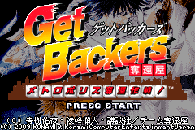

GetBackers Dakkanya - Metropolis Dakkan Sakusen! (Japan)
Flash 512K gbakit Built-In Debug Menu Patch 💾 MultiBoot
Cartridge Identity
- Game Code
A8GJ(FamilyA8G)- Header Title
GB METRO- Maker / Revision
A4/ rev0- ROM Size
- 8.0 MiB (8,388,608 B)
- Save Media
Flash 512K- SHA-256
47c81371c11ca6457d0f81072e4d8861fece53bc2085cf81624ff7a0ec21a150- Engine / SDK Group
comm-001(196 families)
Screenshots

Debug Menu Re-Enablement Patch (.ips)
Download A8GJ-debug.ips (15 B IPS / 2 B delta)
- Hook Mechanism
thumb_branch_override· Patch state-0 branch in scene dispatcher at 0x0800226a (beq 0x080022b0 -> b 0x08002354) to launch developer SOUND TEST menu (0x0800e870)- IPS SHA-256
d5b2803396be2d4e4816069fff9b345156858980a5d247eb3a2c7137757641c3
gbakit patch apply A8GJ-debug.ips original.gba patched-debug.gbaLink Cable & Multiplayer Communications
This title contains detected communication capabilities: 💾 MultiBoot.
Detailed protocol specifications, SIO registers, Joybus commands, and MultiBoot sequences are documented in the Link & Multiplayer Reference.
- Single-Cart MultiBoot
- Single-Cartridge MultiBoot (Download Play) client/server handler · Thumb SWI 0x25 (
0xDF25):0x0b743e,0x0ec7bc,0x181bd8,0x1e9e38
Battery Save Support in gbakit
Built-in definition (A8GJ)
gbakit save verify A8GJ save.sav
gbakit save decode A8GJ save.sav
gbakit save fix A8GJ damaged.sav -o repaired.savROM Assets, Compression & Audio
- BIOS Compression
- LZ77 (
0x10): 441 streams · RLE (0x30): 1 streams - ROM Pointer Tables
- 156 tables (0 pointing to validated compressed streams)
- SDK Backup Tags
FLASH512_V131
Text, Fonts & Scene Data
- Primary Text Encoding
- 16-bit / UTF-16LE text (
72ASCII strings ·1LZ77 ASCII blocks) - Font & VWF Indicators
- VWF Width Table 1bpp Font · BIOS SWIs: BitUnPack
0x10:18· LZ770x11/12:24· Huffman0x13:9· RLE0x14/15:7 - Scene & Packaging
32ROM pointer tables (≥32 entries,4≥200) ·13relativeu32TOCs ·437OAM metasprite hits
Hardware MMIO Subsystems
ppu_display0x8001f94,0x8002990,0x8002adc,0x8002b8c,0x804a878,0x8051a0c,0x8064e50save_bus_sram_flash0x8073a44,0x8073c98